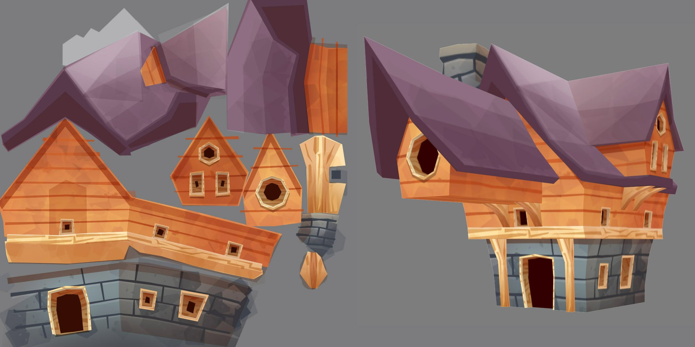
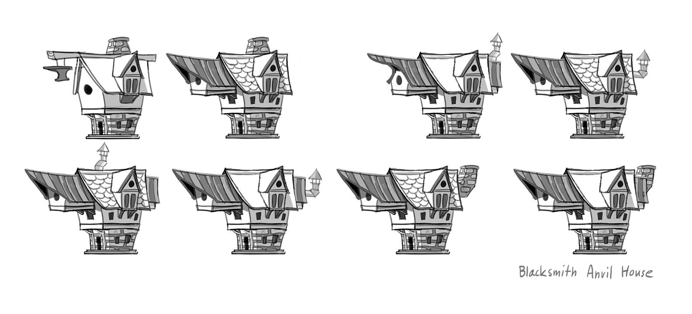
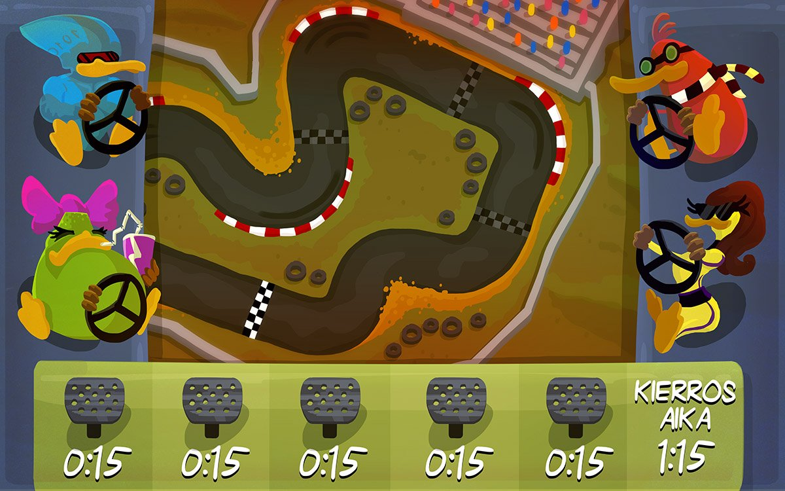
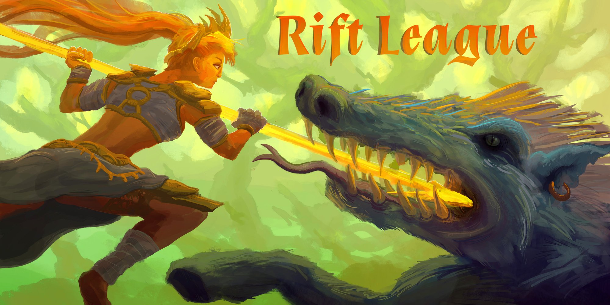
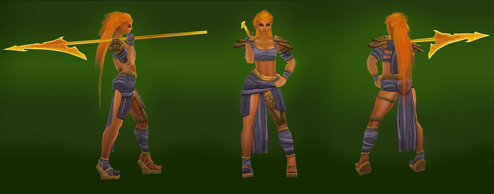
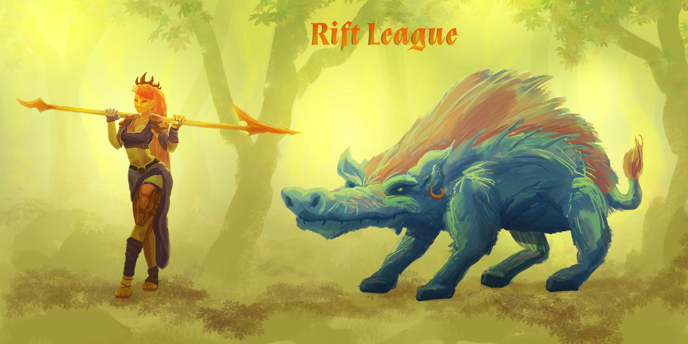
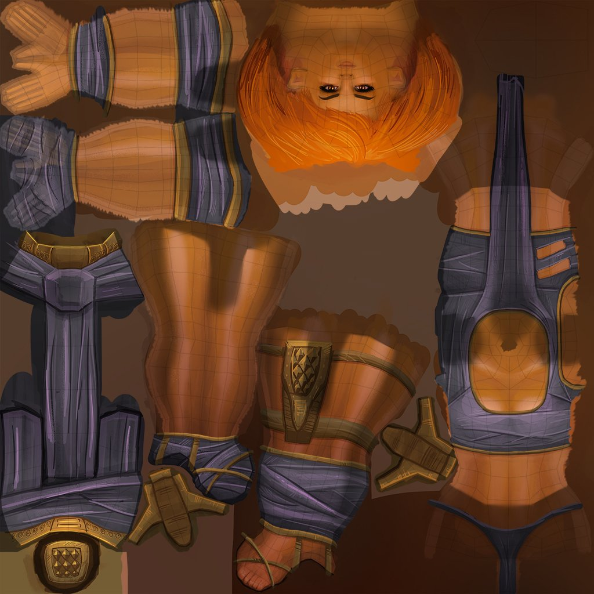

Master's Degree at Aalto University
Trailer video I created for a game called Seanuts. I made the level design and all the visuals for the game. Modeled all in 3ds Max. The game is developed in Unity by Sami Sierla.

Black Smith's House for a game I modeled in 3ds Max and textured in Photoshop.

Concept art of a Blacksmith's house I drew in Photoshop.

Concept art for the award winning game Ankkaralli. The game was made by Muro Studios for Veikkaus game competition.
Ankkaralli won the "Humor" category! I created all the visuals for this game.

Concept art I created for a game called Rift League.

3D character for a game called Rift League. I modeled this in Maya and textured in Photoshop.

Character concept I created for the game Rift League.

Texture I painted in Photoshop for the main character in Rift League.
Characters for a game called Pedestrian Berserk. I created the animations in After Effects and painted the characters in Photoshop.
Game concept pitch video for a game called Cavern Guilds. I created this video in After Effects and all visuals in Photoshop.
Music by Veli Laamanen.